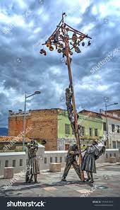
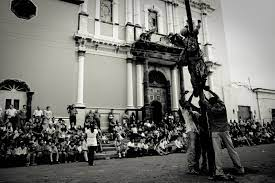
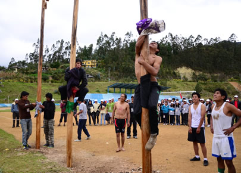

El juego del Palo Encebado es una tradición y juego popular en varias regiones de Ecuador, especialmente durante celebraciones festivas y eventos comunitarios. Este juego, arraigado en la cultura popular, tiene como objetivo principal desafiar y entretener a los participantes mientras promueve la camaradería y la diversión.
El juego consiste en un palo largo y delgado que se coloca verticalmente en el suelo y se "enceba" o recubre con sebo o grasa animal en la parte superior. La dificultad radica en que los participantes intentan escalar el palo para alcanzar la parte encebada y, a menudo, recuperar algún premio que se encuentra en la cima. El sebo o grasa hace que el palo sea resbaladizo, lo que añade un elemento de desafío y diversión al juego.
|  |
Es común que el Palo Encebado sea parte de celebraciones festivas, como fiestas patronales, carnavales o eventos comunitarios. Los participantes, a menudo niños o jóvenes, compiten entre sí para llegar a la cima del palo y obtener el premio. Este juego no solo es una actividad lúdica, sino que también fomenta la colaboración y el espíritu competitivo en un ambiente festivo.
El Palo Encebado es una manifestación de las tradiciones culturales y juegos populares que forman parte del folclore ecuatoriano. A través de su práctica, se transmite de generación en generación, fortaleciendo los lazos comunitarios y preservando aspectos importantes de la identidad cultural del país.
Una característica fundamental del Palo Encebado es la aplicación de sebo o grasa en la parte superior del palo. Esto hace que el tronco sea resbaladizo y difícil de escalar. Los participantes se enfrentan al desafío de superar la naturaleza resbaladiza del palo para llegar a la cima. Este componente agrega emoción y dificultad al juego, ya que los participantes deben emplear habilidades físicas y estrategias para alcanzar el objetivo.
Aunque el Palo Encebado es un juego competitivo, también fomenta la camaradería y la cooperación entre los participantes. A menudo, se lleva a cabo en eventos festivos o comunitarios donde las personas de diferentes edades y habilidades participan juntas. La competencia se mezcla con el espíritu festivo, y el juego se convierte en una actividad social que fortalece los lazos comunitarios. A pesar de la competencia, el ambiente general es amistoso y lleno de risas.
El Palo Encebado no es solo un juego; es una expresión de la cultura popular y las tradiciones ecuatorianas. Se lleva a cabo en eventos festivos y celebraciones que a menudo están arraigadas en la historia y el folclore de la comunidad. Esta característica le otorga al juego un valor cultural significativo, ya que se convierte en una práctica que se transmite de generación en generación, preservando la identidad cultural y fomentando un sentido de pertenencia a la comunidad.
La historia exacta de cómo se creó el tradicional juego ecuatoriano del Palo Encebado no está documentada de manera precisa, ya que estas tradiciones populares a menudo se transmiten de generación en generación de manera oral y se arraigan en la cultura local. Sin embargo, se cree que este juego tiene raíces profundas en las celebraciones y festividades de las comunidades ecuatorianas, especialmente en eventos como fiestas patronales, carnavales y otras festividades populares.
El Palo Encebado probablemente se originó como una forma de entretenimiento y desafío físico durante celebraciones comunitarias. La idea detrás del juego es simple pero efectiva: los participantes intentan escalar un palo largo y delgado que ha sido untado con sebo o grasa en la parte superior, lo que hace que sea resbaladizo y difícil de escalar. El objetivo es alcanzar la cima del palo, donde a menudo se coloca algún tipo de premio.
|  |
La dificultad añadida por el sebo o grasa en el palo agrega emoción y diversión al juego, ya que los participantes deben usar estrategia y fuerza para superar el desafío resbaladizo. El Palo Encebado no solo es una actividad lúdica, sino que también fomenta la camaradería y la competencia amistosa entre los participantes..
Aunque no hay una historia específica sobre la creación del Palo Encebado, su arraigo en las tradiciones festivas y su presencia continua en eventos culturales demuestran su importancia en la identidad cultural del Ecuador. Este juego ha perdurado a lo largo del tiempo, adaptándose y manteniendo su atractivo en las festividades locales en todo el país.
La tradición del juego del Palo Encebado tiene profundas raíces en la cultura popular de Ecuador y es una actividad que ha perdurado a lo largo de los años. Este juego es común en festividades locales, fiestas patronales y eventos comunitarios en diversas regiones del país. Aunque no existe una historia específica universal para el juego, su práctica se ha transmitido de generación en generación como parte integral de la identidad cultural y folklórica de Ecuador.
|  |
El Palo Encebado implica la colocación de un poste largo y delgado, a menudo un palo de madera, verticalmente en el suelo. La parte superior del palo se unta con sebo o grasa animal, haciendo que sea resbaladizo y difícil de escalar. El desafío para los participantes es intentar subir por el palo para alcanzar la parte encebada y, a menudo, recuperar algún premio que se encuentra en la cima.
El juego del Palo Encebado tiene múltiples capas de significado y propósito. Además de proporcionar entretenimiento y diversión, el juego fomenta la camaradería, la competitividad y el espíritu comunitario. Los participantes, a menudo niños y jóvenes, se reúnen para enfrentar el desafío del palo resbaladizo en un ambiente festivo y alegre.
En muchos casos, el Palo Encebado se incorpora a festividades tradicionales y religiosas, sirviendo como una forma de celebrar y fortalecer los lazos comunitarios. Aunque la historia del juego en sí no está documentada de manera específica, su pervivencia a lo largo del tiempo resalta su importancia como una tradición arraigada en la cultura ecuatoriana, reflejando la creatividad, la diversión y la conexión entre las comunidades.